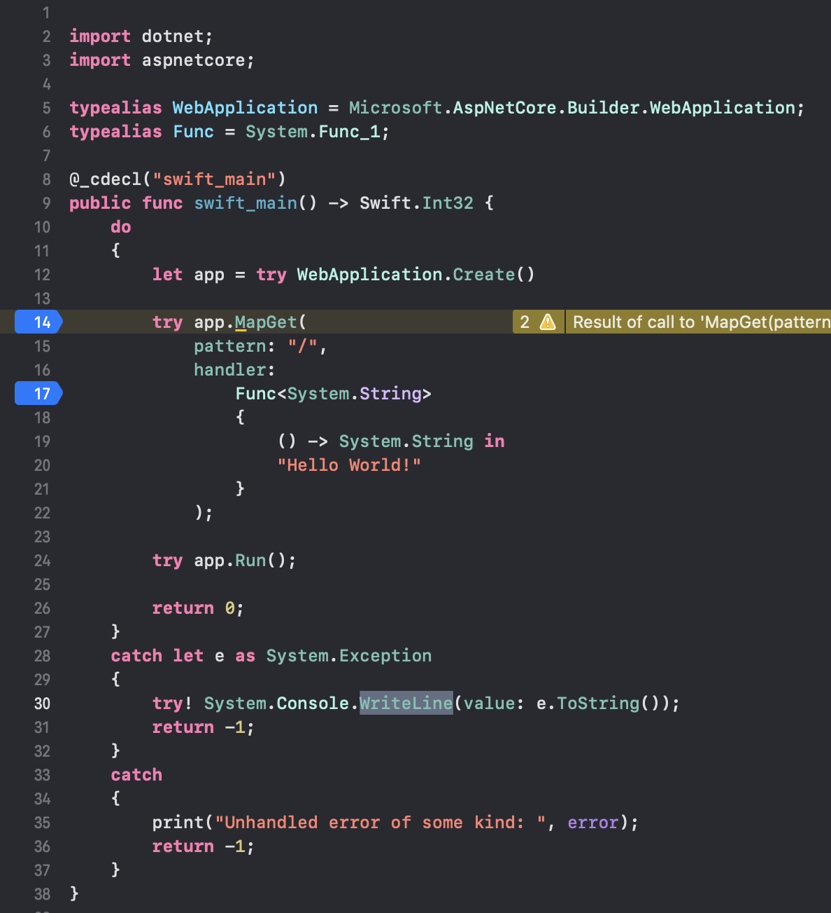
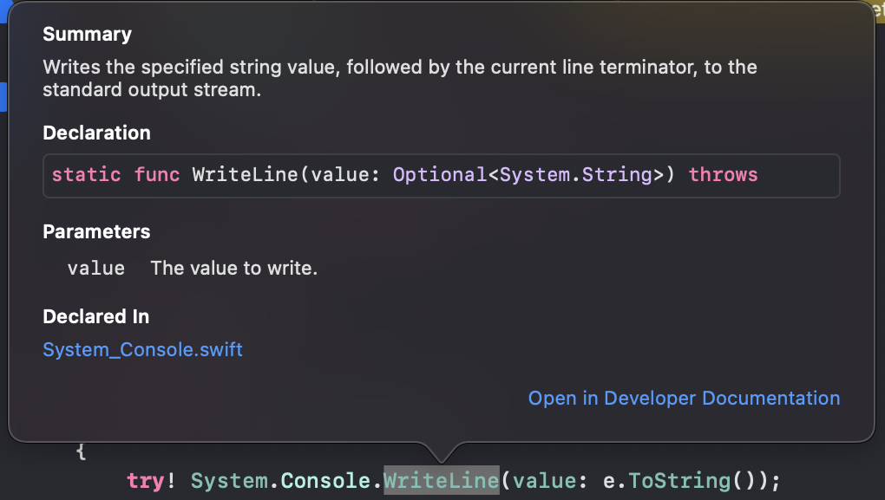
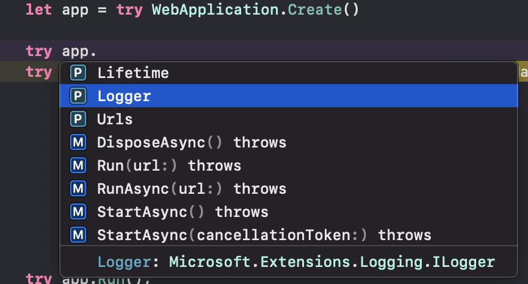

For quite some time I have been working on various things involving interop between .NET and other ecosystems. If you follow my blog or tweets, you've seen me talk about "Llama", and then "Alpaca", and so on. Generally speaking, I have referred to these efforts as my exploratory projects.
But one of those efforts (the one previously called "Alpaca") is now called "SourceGear Bridge", and the new name reflects our intention to develop this into a production-ready solution with support available. (Note that I'm not saying that it is production-ready now, simply that now we are focused on getting it there.)
In broad brush strokes, we will describe SourceGear Bridge in terms of delivering great interop between .NET and other things. We hope to expand to more languages in the future, but for now the primary focus is Swift. And for that reason, most of my attention lately has been on providing the user experience that Swift developers expect. In other words, everything needs to work well in Xcode on a Mac.
SourceGear Bridge preview release 0.2.0 is now available, and in this blog entry I will walk through a simple demo. This blog entry is written (with an attempt) to be readable by Swift developers who may not know much about .NET.
If you want to follow along on a Mac, you will need Xcode 13, configured to run Swift 5.5 on the command-line. I'm using a MacBook Pro M1 with macOS 11.5.2.
The command-line parts of this demo will work on Linux if you install Swift 5.5. I'm using Ubuntu 20.04 under WSL 2.
And of course you will need the .NET 6 SDK:
https://dotnet.microsoft.com/download/dotnet/6.0
(If you're on a Mac, I recommend using the installer, which I have found to be painless, as compared to the "Binaries".)
For this blog entry, I'm going to start with the command-line for a while and then switch to Xcode a bit later.
The .NET command-line interface is called dotnet, and its
basic design is similar to the swift command-line interface,
where the first argument is the name of a command.
Building with .NET? Use dotnet build.
Building with Swift? Use swift build.
To create a new web project with .NET,
you would use dotnet new:
mkdir foo cd foo dotnet new web -lang C#
(The -lang C# argument is usually optional because
it's the default language for .NET.)
This will result in several files being generated.
The two important ones are foo.csproj (the project
file) and Program.cs (the source file).
You can take a look at these files if you like, but I just wanted to mention them and move on to focus on how to create the equivalent project in Swift.
Many things about the .NET command-line interface
can be customized, including support for other languages.
So the first thing we want to do here is to install
some templates to let dotnet know about Swift:
dotnet new --install sourcegear.bridge.swift.templates
In the command just above, sourcegear.bridge.swift.templates
is the ID of a package on nuget.org. NuGet is the package
manager for .NET.
Having installed the templates, we can can list the available templates like this:
dotnet new --list
You should see a bunch of built-in templates, plus a couple of new ones for the Swift language.
Let's use one of those templates to create the same project we did above, except now in Swift:
mkdir bar cd bar dotnet new web -lang Swift
This should create three things:
bar.swiftproj Package.swift Sources/
The presence of the Package.swift file indicates that this
directory is now a SwiftPM package, and can be used with any
Swift tooling that supports Swift Package Manager, including the swift
command-line tool as well as Xcode.
(For .NET devs: Package.swift looks like a Swift
source file but it's actually a project file, the equivalent of
a csproj. It uses Swift syntax, but don't think of
it as Swift code.)
The presence of the bar.swiftproj file means that this
directory is also a .NET project, and can be used with
the dotnet command-line interface as well.
This file is the Swift equivalent of the
foo.csproj file. It's in an XML-based format called MSBuild,
but Swift developers shouldn't need to worry about that. A typical
MSBuild file has lots of settings and properties and targets and
tasks. But in this case,
what this file does is explain to MSBuild how to get the information it
needs from Package.swift instead.
The source code for project is in the
Sources/ directory, just as one would expect for a
Swift package. We'll take a look at the code itself
later when we open it up in Xcode.
But let's peek briefy inside Package.swift, where we
see this:
dependencies: [
.package(
name: "sourcegear-bridge-aspnetcore",
url: "https://github.com/sourcegear/sourcegear-bridge-aspnetcore",
.exact("0.2.0")
),
],
The bindings for .NET 6 and ASP.NET Core 6 are in the form of
Swift packages, hosted on GitHub. The sourcegear-bridge-aspnetcore
package contains the bindings for ASP.NET Core. The sourcegear-bridge-dotnet package
contains the bindings for the .NET 6 base class library.
(For .NET devs: A Swift package is a git repo, specifed by a URL, plus information about what tag/branch/commit to use. Yes, really. Given your experience with nuget and the connotations of the word "package", you're going to be looking for a single-file format which is actually a zip. It's not there. Also, there is no central package registry, but the Swift community seems to be working on that.)
Continuing on the command-line a bit more, try running swift build.
The first time you build the project
will take longer because it has to compile all the bindings.
The result of the build should appear as a shared library (on Mac, a dylib) in
.build/debug/.
The compilation model here is to build the Swift code into a shared library. Then the tooling generates a trivial .NET host program that (1) initializes the bindings so that Swift can call .NET APIs, and (2) passes control to the the Swift code.
Now we can do dotnet run and you should see messages indicating
that the web server is running on port 5000:
eric@Erics-MacBook-Pro bar % dotnet run
info: Microsoft.Hosting.Lifetime[14]
Now listening on: http://localhost:5000
info: Microsoft.Hosting.Lifetime[14]
Now listening on: https://localhost:5001
info: Microsoft.Hosting.Lifetime[0]
Application started. Press Ctrl+C to shut down.
info: Microsoft.Hosting.Lifetime[0]
Hosting environment: Production
info: Microsoft.Hosting.Lifetime[0]
Content root path: /Users/eric/bar
And you should be able to go to a browser and access http://localhost:5000/
to see: Hello World!
Okay, let's try opening the Package.swift file in Xcode,
either from Finder, or from the command-line, like this:
open Package.swift
Here in Xcode, things should mostly work as you would expect, like any other Swift project, with syntax coloring and code completion and other niceties.

Most .NET APIs have documentation comments, and that information is propagated through the bindings to make it available with Xcode Quick Help:

Code completion is especially helpful for a framework like ASP.NET Core, which has many features and a large surface area:

Looking at Program.swift, there are import declarations, typealias declarations, some
error handling, and a function declaration, but the essence of the matter is the following snippet:
let app = try WebApplication.Create()
try app.MapGet(
pattern: "/",
handler:
Func
{
() -> System.String in
"Hello World!"
}
);
try app.Run();
Three API calls:
One to create the web app
One to set things up
One to run it
The most interesting call here is the second one, the call to MapGet(pattern:handler:),
which basically says "when somebody accesses the root URL, run this closure, which returns a string".
One thing you might notice is that the C# version is more concise than its Swift equivalent. Both are using the same 3 API calls from the so-called "minimal" APIs which are new in ASP.NET Core 6. See the recent blog entry by Scott Hanselman:
https://www.hanselman.com/blog/minimal-apis-at-a-glance-in-net-6
But currently the Swift incarnation ends up more verbose. There are some things we can do in the future to make things tighter. For example, we can move a bunch of the boilerplate from the source file into the SDK, which is (in part) how ASP.NET Core minimal APIs work anyway. A full explanation would fill another blog entry, but for now I'll highlight a few of the ways that the Swift and C# code differ:
It is common in Swift to use named parameters. The MapGet() call shows this, with pattern: and handler: labels for its arguments.
The handler: argument for MapGet(pattern:handler:) is a Swift closure (converted to a .NET delegate). In the C# version, the lambda is shorter, because it makes use of a new C# 10 compiler feature to infer delegate types.
Swift doesn't have namespaces. We cope with this limitation by using nested types (which kinda works), and the Swift typealias feature (which is actually quite powerful). I still want real namespaces BTW.
(For .NET devs: I'd like to clarify that despite what you see in this code, Swift does not have exceptions. Swift error handling uses the terminology of try and catch, but it all happens within one function; no stack unwinding involved.)
The binding generator currently declares every Swift wrapper function as throws, because it assumes the underlying .NET method might throw an exception which needs to be propagated. I have a few thoughts on how this might get smarter in the future, but for now, every call to a .NET function is preceded with try.
We have lots to do as we move SourceGear Bridge toward a production-ready release. Here are a few things that are in progress but not yet finished:
F#-style object expressions
Support for async/await (new in Swift 5.5)
Fix handling of formatting and other inline tags in documentation comments
Automatic generation of bindings for nuget packages
Test this stuff on Windows and see if it works
Samples. Need. Samples.